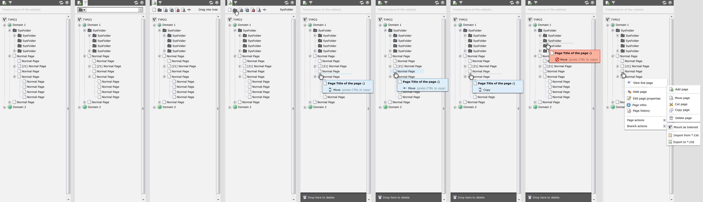
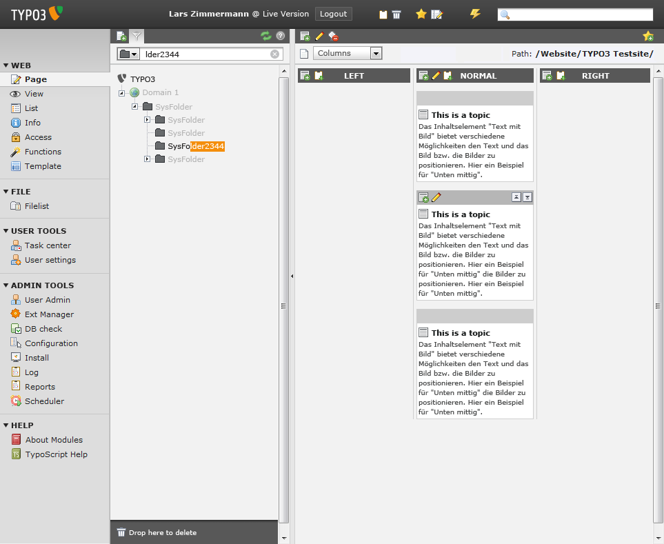
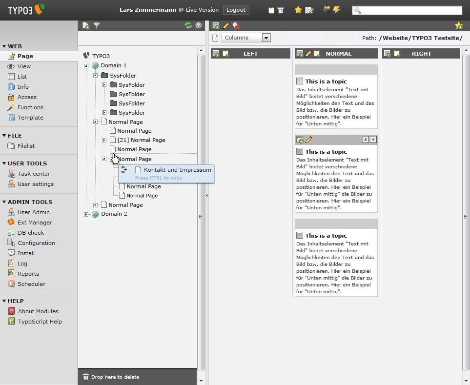
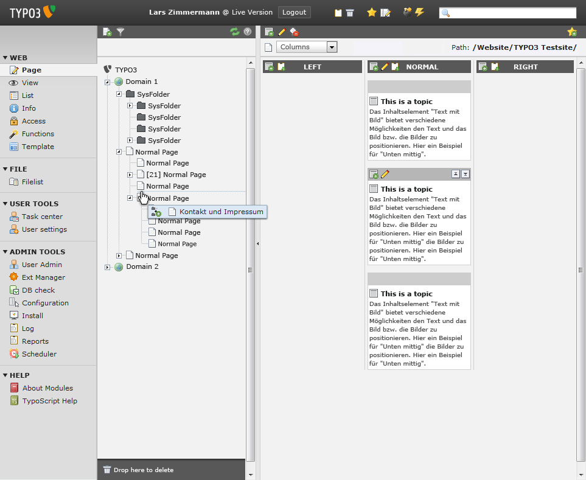
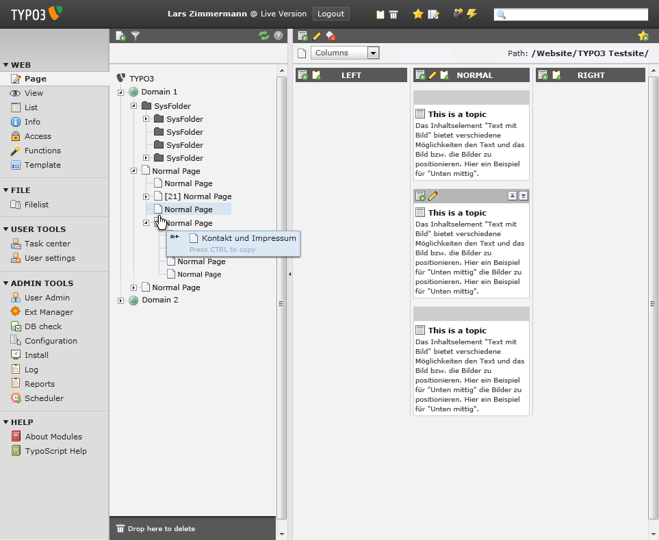
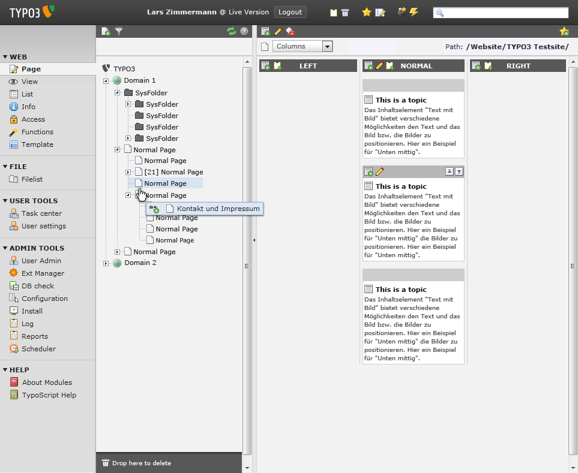
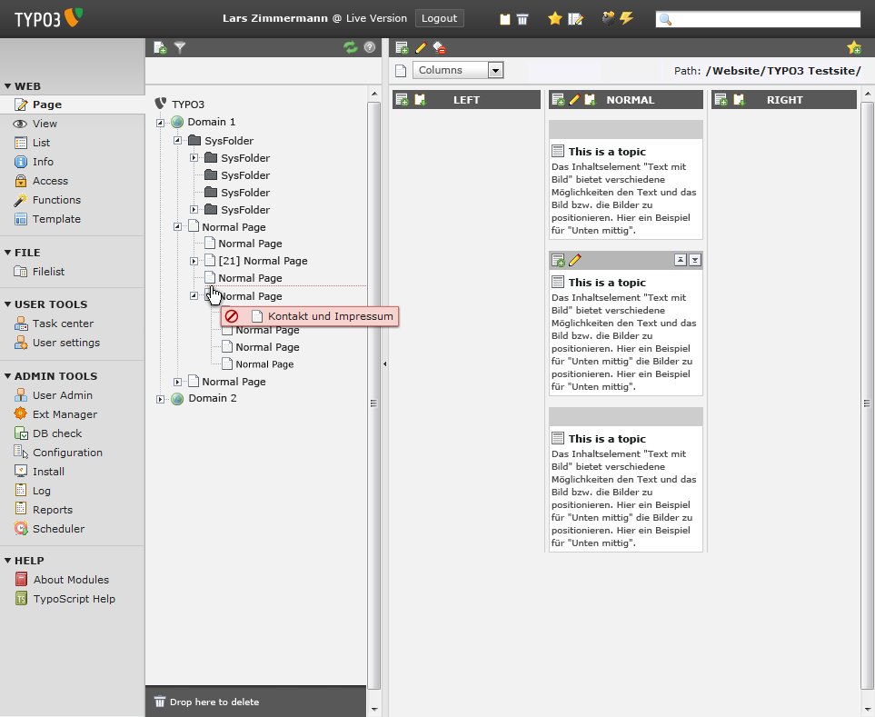

Bug #5324
[team4] Rewrite tree frame using Ext.tree
| Status: | Closed | Start date: | 2009-11-11 | ||
|---|---|---|---|---|---|
| Priority: | Should have | Due date: | |||
| Assigned To: | Jens Hoffmann | % Done: | 50% |
||
| Category: | Interface | ||||
| Target version: | TYPO3 4.5 LTS | ||||
| Tags: |
Description
After reading the Tree chapter in "Learning Ext JS", I must say: We have to use this!
This would give us several UX improvements, like better drag&drop, tree search (#5311), etc.
This new Tree should be used in Filelist, Page tree, Element browser and be usable for extensions like DAM.
{kind=link}
{kind=link}
{kind=link}
{kind=link}
{kind=link}
{kind=link}
{kind=link}
Related issues
History
#1 Updated by Steffen Gebert over 5 years ago
#2 Updated by Bodo Eichstädt over 5 years ago
- Assigned To set to Sebastian Kurfuerst
- Target version set to TYPO3 4.4
- % Done changed from 0 to 50
in progress, will be ready at the end of this week
#3 Updated by Bodo Eichstädt over 5 years ago
- Subject changed from Rewrite tree frame using Ext.tree to Rewrite tree frame using Ext.tree [team4]
- Status changed from New to Accepted
#4 Updated by Bodo Eichstädt over 5 years ago
- Subject changed from Rewrite tree frame using Ext.tree [team4] to [team4] Rewrite tree frame using Ext.tree
#5 Updated by Jens Hoffmann almost 5 years ago
- Assigned To deleted (
Sebastian Kurfuerst)
Add the Feature change request from Issue: #3096 to the tree, please.
#6 Updated by Jens Hoffmann almost 5 years ago
- File new-extjs-tree-features.png added
Here you could find the Tree UI changes as Designs.

- Default
- "Filter" open
- Filter result (missing)
- "Add entry" opem
- "Add entry" drag to tree
- Move entry - between (Recycler Drop Area open (Slides in))
- Move entry - into (Add as child node at top of all childes)
- Copy entry - Start with move + push STRG to change mode
- Drop denied (Unfinished Move action)
- New Content Menu / New Content Menu Structure
... more to come.
#7 Updated by Jens Hoffmann almost 5 years ago
- Category set to Interface
- Assigned To set to Jens Hoffmann
- Target version changed from TYPO3 4.4 to TYPO3 4.5 LTS
#8 Updated by Jens Hoffmann almost 5 years ago
- File typo3_v4_4-08_filter_aktiv.png added
- File typo3_v4_4-08_01move_between.png added
- File typo3_v4_4-08_02copy_between.png added
- File typo3_v4_4-08_03move_inside.png added
- File typo3_v4_4-08_04copy_inside.png added
- File typo3_v4_4-08_05move_between_error.png added
Updated version of the Screens a both!
Use this style please!
typo3_v4_4-08_filter_aktiv.png

typo3_v4_4-08_01move_between.png

typo3_v4_4-08_02copy_between.png

typo3_v4_4-08_03move_inside.png

typo3_v4_4-08_04copy_inside.png

typo3_v4_4-08_05move_between_error.png

#9 Updated by Stefan Galinski over 4 years ago
IMHO this can be closed, right? ;-)
#10 Updated by Felix Kopp over 3 years ago
this is done
#11 Updated by Jens Hoffmann over 3 years ago
- Status changed from Accepted to Closed
Thx for the "reminders" :)